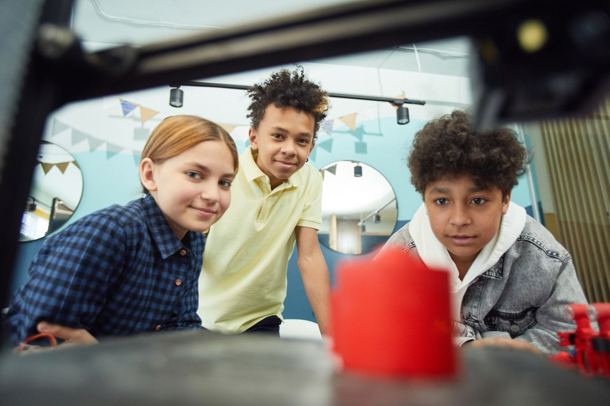
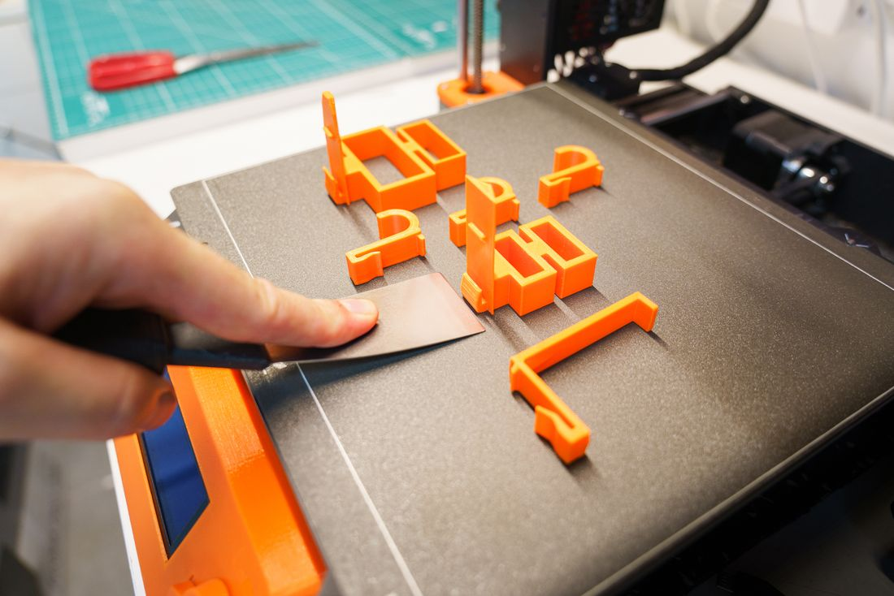
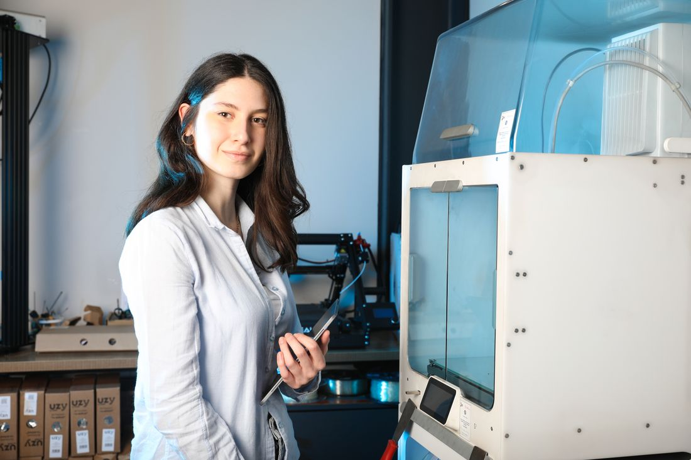
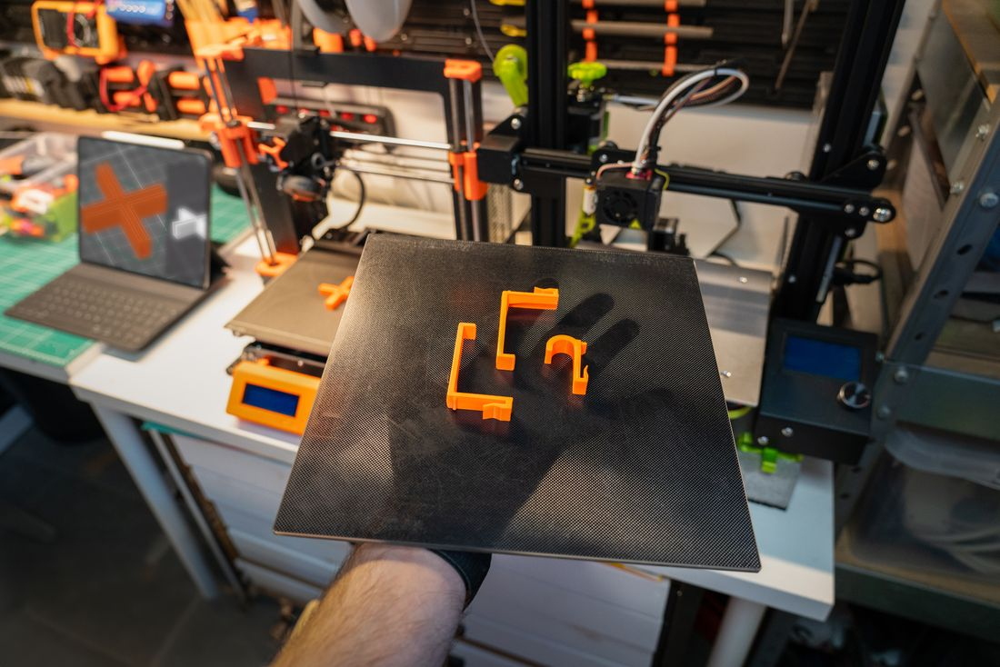

Describe it or start from a photo. twyk generates a 3D model you can size to the millimetre, tweak in plain words and send straight to your printer.
Rather build it yourself? Start from scratch in the editor ›
Exports STL and 3MF for Bambu Studio, PrusaSlicer, OrcaSlicer, Cura and any other slicer.
Type what you want, start from a photo, or open a community model.
AI builds a 3D model that opens straight in the editor. Not right? Ask again.
Say “make it 72 mm wide” or set sizes by hand. Add holes, text and mounts.
Check it bends without snapping and moving parts won’t fuse, then export STL or 3MF.
Share it to the Community. Anyone can make their own copy and change it with AI twyk.
twyk is for the moment a design comes off the print bed: parts that fit, gifts with a name on them, and things that didn’t exist this morning.




Photos: Vanessa Loring, Jakub Zerdzicki and Yusuf Çelik on Pexels.
Download the STL or 3MF from the sites you already use, import it into twyk, and change whatever doesn’t fit, by hand or with AI twyk.
AI twyk gets you started. Then you have the tools to make it exactly right, and the checks to know it will print.
Free, with no plans or payments. Sign in with Google and your models save as you go. How twyk compares ›
Gear that fits what you own, figures your fans can print, and parts that fix the annoying stuff. Click any idea to try it.
Example prompts. Models shown are illustrations, and generated results will vary.
AI generators guess. Fit can’t be a guess. twyk turns what you type into real editor operations, the same millimetre tools behind every model on twyk. Ask for 72 mm and you get 72.00 mm.
Stop hunting for a model that almost fits. Describe your gear and get one that does.
Turn your mascot or emotes into figures your community can print, remix and show off.
For electronics, smart home and FPV projects where 0.5 mm off means it doesn’t close.
Shared models aren’t frozen files. Make your own copy of anything in the Community, then ask AI twyk to resize it for your gear, add your name, or turn it into something new.
Your first object is one sentence away.
Prefer to design by hand? Open the editor ›